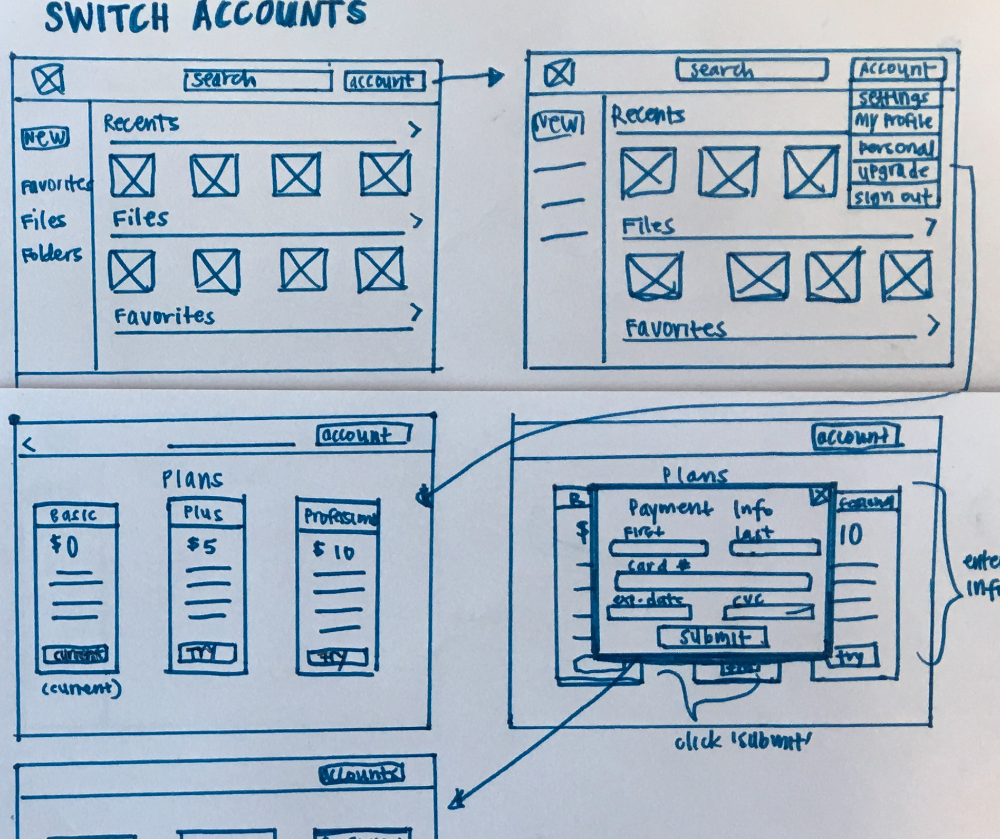
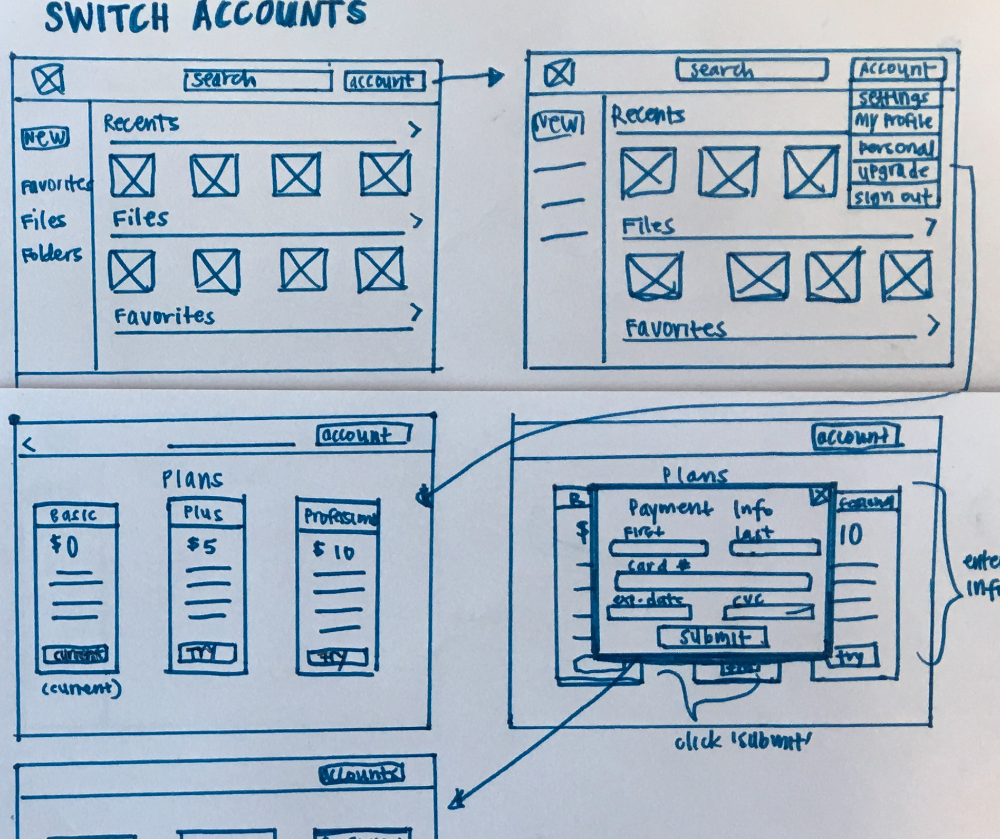

OVERVIEW
Deciding where to eat sounds easy, but it can be a daunting task. With different preferences and personalities, making a quick decision that satisfies everyones needs seems nearly impossible. Rumble is here to ease the process by answering the old age question of, “What do you want to eat?” by randomly choosing a restaurant for you.
ROLES
User Research/ Prototyping/Visual
Design/ Brand and Identity
DELIVERABLES
User Surveys/ Personas/ Competitive analysis/
User stories & flows/Prototype/
Wireframes/ User testing/Visual design
TOOLS
Sketch/ InVision/ Adobe Illustrator/
Balsamiq
DURATION
8 weeks
THE PROBLEM
How can we shorten the decision making time and create a pleasant dining experience?.
THE SOLUTION
Our goal is to help hungry humans get rid of the time spent deciding where to eat. Users filter through restaurants and Rumble chooses a destination for them. The application creates an intuitive, descriptive and personalized decision making app that can be used daily, helping local restaurants and saving the “Ummm”’s, “Whatever”’s and “I don’t know,”s for another day.
RESEARCH
USER RESEARCH
I surveyed 58 participants to discover dining behaviors, focusing on what users look for when deciding where to dine out and reasons for indecision. I wanted to know current apps used and the value a restaurant decision-making app would have in their daily lives.
Key finds from the survey:

88% eat out at least once a week and up to four times a week, with more than half of the participants eating out with others.

Top three factors influencing dining decisions are location (80%), cuisine (73%) and price point(70%)

90% say that reviews and ratings are important

88% agreed that discounts and promotions would influence their decision.
OVERALL
I interviewed three participants asking more detailed questions about their decision making process when deciding to eat out. The top priorities for all three interviewees were what type of food they were having and location. Some frustrations they experienced were not knowing what to eat and nothing sounding good.
“It frustrates me when me and the other person cant decide on the same place because we’re craving different things.” - Sharon
“Not being able to think of a place and eating out with picky eaters sets me back when making a decision” - Sean
“I rely heavily on reviews and ratings if it’s a place that I haven’t been to.” - Christine
COMPETITIVE ANALYSIS
With a number of existing cloud services available, I took a closer look into three big competitors to better understand the market place and review their strengths and weaknesses. All offer functions to save, organize and share content. I focused on existing features and key differentiators to seek out opportunities where I could add the most value for the user.

YelpHelps people find businesses and most widely used by participants. It has advanced search capabilities including filters. It has a strong review system could be faulty, with unreliable reviews.

Spotluckis soley focused on discounts, incorportating gamification software and integrated with google maps With a limited pool of restaurants, users arent always satisfied with restaurants that are chosen.

Opentable helping users find new restaurants to eat and make easy reservations with ability to filter the distance, cuisine, cost and ratings.
USER PERSONAS

JENN COLE
Occupation: Student / Age: 23 / Location: Los Angeles, CA / Gender: Female
MOTIVATION
Jenn works on school projects in and outside of school, using both her laptop and mobile device to share documents. She values how easily accessible her files are from her cloud storage. She likes to organize and separate her files so she can share personal photos with friends and keep her school files for projects.
GOALS
- Files safe and secure in cloud storage
- Locate all files quickly and efficiently
- Aptly organizing saved content
FRUSTRATIONS
- Has to check both school and social accounts separately
- Some plans are too expensive

KATE DIAZ
Occupation: Market Research Analyst / Age: 32 / Location: Los Angeles, CA / Gender: Female
MOTIVATION
As a Market Research Analyst, Kate works on multiple projects at once. She is typically conducting research and collecting data, so collaborating and sharing her findings are an important. She must synthesize her findings into large documents and create presentations for clients, creating various files such as documents, slides, and spreadsheets. She relies on quick accessbility and easy organization of files in order to successfully complete tasks and projects.
GOALS
- Organization with a clear hierarchy
- Easily collaborate on documents
- Easier ways to share and collaborate files
FRUSTRATIONS
- Unable to clearly differentiate between files
- Limited storage space
- Too much time spent finding different types of files in storage
MY GOALS
From continued research, my goal is to create a space where users are able to share content and collaborate on files, create a dasboard with a clear hierarchy of information, and allow for easy organization of content.
INFORMATION ARCHITECTURE
USER FLOWS & SITE MAPS
Using Whimsical, five different tasks were mapped out into user flows. I made sure to select a different range of tasks, from signing up to creating a list of restaurants through filters,.
The user flows were also combined into a site map to organize the overall information.
Five user flows tested:
1. Signing up and signing in for an account
2. Adding filters to create a list of restaurants
3. Adding your own restaurants into a list
4. Creating a list of restaurants with discounts and offers only
5. Leaving a review of a past restaurant
BRANDING
BRANDING & LOGO
When starting to conceptualize a brand identity, I focused on the idea of space and safety. For the logo, I went through many iterations and ultimately chose a cloud to represent the platform. It symbolizes a self- contained space with an endless realm of possiblity, the perfect space to store ideas. The geometric shapes within the cloud symbolize digitized security within the platform.


Mindmaps and word association was used to create a name that was simple and
catchy.
COLORS
#248199
#0E5275
#489EB4
I played with bright colors such as red orange and yellow, eventually narrowing it down to just two shades of orange, keeping my designs simple and consistent. I chose to use a bright color like orange that stimluates the mind and grabs your attention. Bright colors such as red and orange are also connected to appetite and stimulation. Choosing to focus on one color made for strong brand recognition. Deep navy blue and grey were used as secondary colors to give depth to the primary orange color, creating a bold and dynamic look.
TYPOGRAPHY
Poppins, a geometric sans serif, was used as the primary font. The symmetrical curavtures create a modern look with text that is evenly spaced and easy to read. Roboto, also a modern sans serif, was used as the secondary font. It is not as rounded as it’s pairing font, but instead has a more formal personality, effectively contrasting with the playful nature of Poppins. Pairing these two recognizably different fonts together create a modern feel that is dynamic and easy to digest. I used letter spacing to my advantage, creating a spacious look.

WIREFRAMES & TESTING
WIREFRAMES
Taking the user flows, I quickly sketched a basic layout for each screen on paper. I then used Figma to create a set of wireframes and tested them on a few participants via Marvel and Figma. The onboarding process along with adding their own restaurants into a list were completed with ease. Users experienced some trouble when asked to find a list of restaurants by setting filters and leaving a review. The directions given along with the how the information was organized led to confusion. Through testing, I was able to see where I needed to make changes to simplfy these tasks.
 

Home screen: I created three separate shuffles to get a list of restuarants: a filtered spin, adding your own restaurants and a discount option. I included a discount option on the homepage since the majority of participants look for discounts when deciding where to eat. Through testing, I discovered that including a discount spin on the home page created confusion, so I eliminated the discount button and merged it as a filtered option.
Filtered spin: The filtered page consists of five sections that include setting a location, the distance from location, food types, discounts and other options. In testing, users found the information to look too cluttered. Initially all on one screen, I spaced them out into separate screens, highlighting each filter and giving the information room. This change also led to a different approach in presenting the information. Instead of separating each filter section with a label, questions were presented to engage them in a conversation and humanize the app.
Call-to-action buttons: For the on boarding screens, I deemphasized secondary buttons, giving attention to the primary call to action buttons. Location access: I made sure to ask for access to the user’s location after they clicked an action to set a location, rather than asking at the start when the user is not aware of the app’s capabilities.
HIGH FIDELITY MOCKUPS & TESTING
In the high fidelity mockups, I aimed to create a strong structural hierarchy via text size, color and spacing while focusing on engagement and consistency. Another round of testing was done to test out changes made from the wireframes.
landing page

dashboard
Hierarchy and Clarity:
A screen was added before onboarding to explaining the decision making app and clarify that it was not just another Yelp app. On the onboarding screens and homepage, Anchor texts were kept consistent and dark background was used to highlight call-to-actions. I also deemphasized secondary buttons or buttons that should not yet be used to narrow down the focus to primary actions.
For visual hierarchy, I incorporated all caps for buttons and played around with caps and font size for subtitles.
Filter Page:
I made different versions of the filter screen, such as incorporating visuals to break up the text.
I ultimately left the image out of the filters and instead created each button to be of equal widths to give greater consistency and readability.
For selected filter options, I used a different color outside of orange to highlight a selected filter as not to overwhelm the page with a single color.
After wireframe testing, I distributed the filter options into separate screens, but realized its weak usability. Users had no way of quickly viewing their filtered options so I reverted back to including all filters on one page, and omitting the ‘distance from location’ and ‘discounts and offers only’ sections. The ‘distance from location’ was removed since the app automatically finds restaurants near the location selected. The discount section was also excluded and a separate discount option under ‘More options’ was included instead. DUring testing, users were able to find the discount filter with little trouble. By choosing to get rid of these two sections, more space was created to evenly display information onto a single screen without creating clutter. Users are now able to view all selected filters on one screen, creating greater visibility.
Leaving a Review:
When asked to leave a review, some users were unsure of where to start.
For those who were able to successfully submit a review, it either created some initial confusion or took more time to complete.
For greater visibility, I included a ‘History’ icon in the bottom nav where users could quickly view selected restaurants from the past, taking them directly to the restuarant page where they could leave a review.
INSIGHTS
WHAT I LEARNED
Building for the user.
Keeping my users in mind throughout the process from conception to finalization allowed me to stay focused on creating a product that an actual user might find valuable. Things that seem clear to me might not be clear for the user. Making changes based on the needs of the actual user instead of relying on my own preferences or assumptions was essential.
User testing and iteration.
User testing was invaluable in finalizing the application.
Most of the changes happened during this step, emphasizing the importance of research and testing in the early phases.
With that being said, presenting the user tests by giving clear and specific directions was important in minimizing confusion.
Constant testing and iteration was key!
If given more time, I would have tested more users in both the survey and first usablility test to gather a larger set of data, since most participants were students or within the same field of work.
LET'S CONNECT!